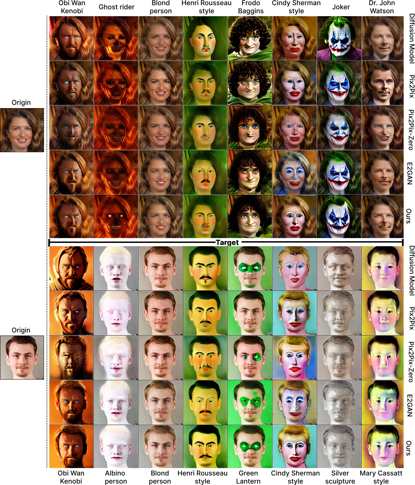
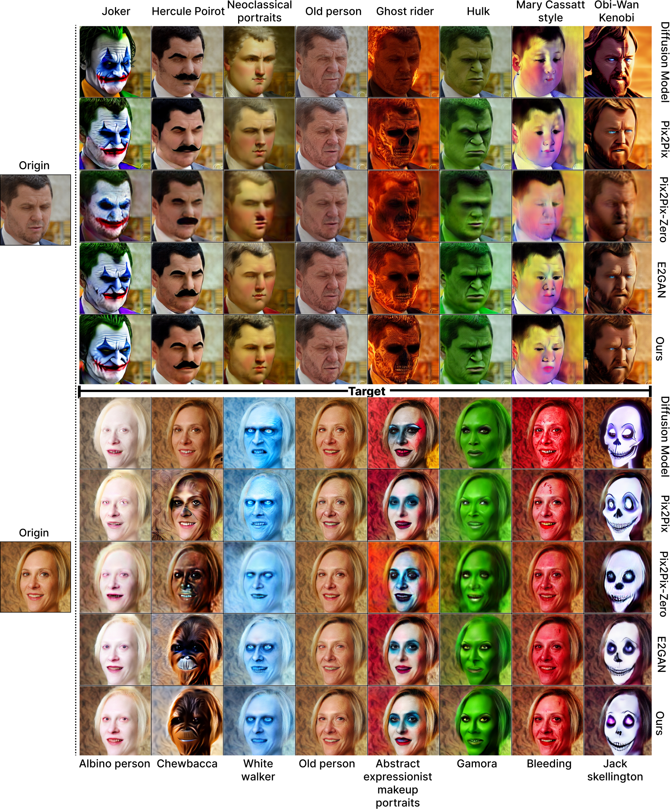
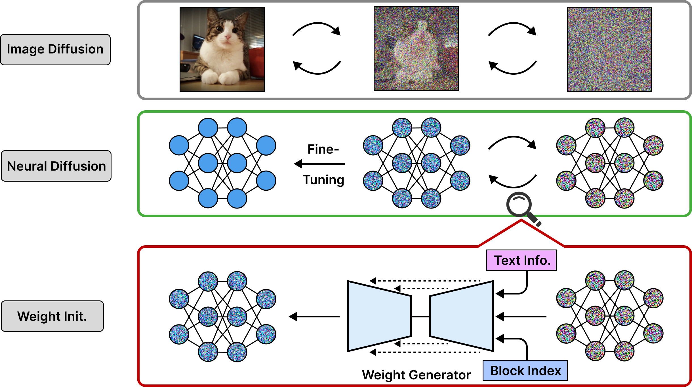
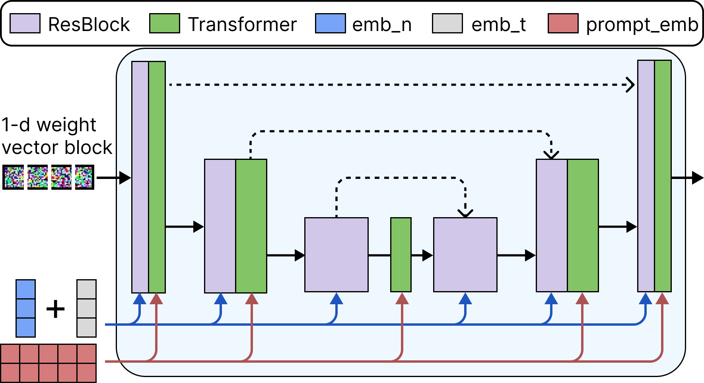
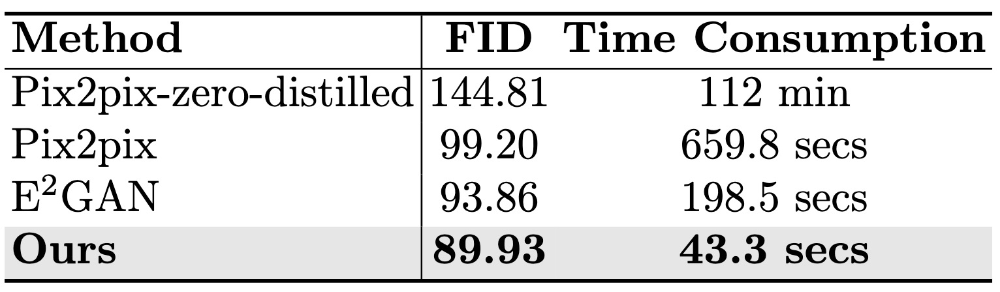
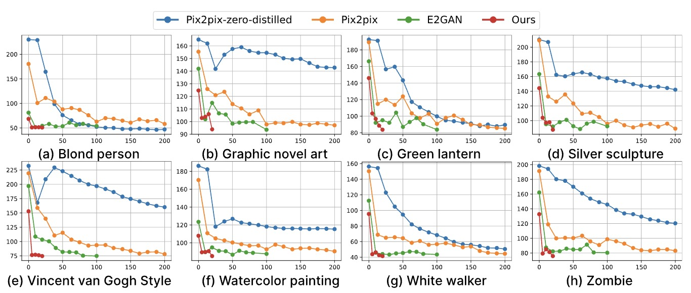
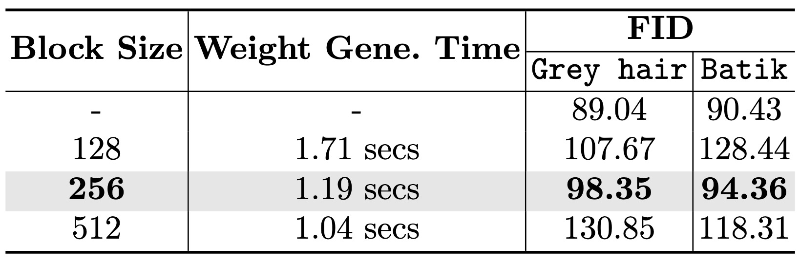
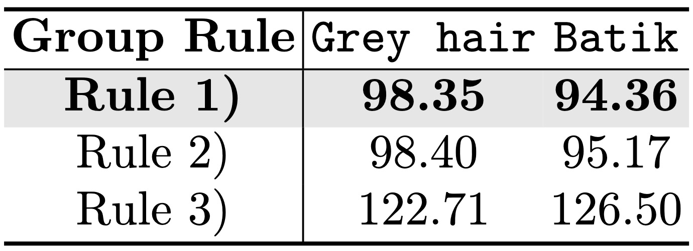
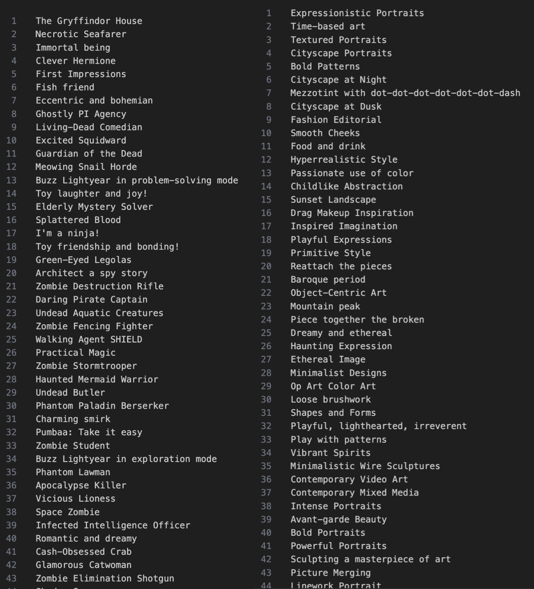

Qualitative Comparisons on Various Tasks






|  |
|  |
|  |
|  |
|  |  |
|  |
[1] Image-to-Image Translation with Conditional Adversarial Networks
[2] Large Scale Image Completion via Co-Modulated Generative Adversarial Networks
[3] Zero-shot Image-to-Image Translation
@article{gong20242,
title={Efficient Training with Denoised Neural Weights},
author={Gong, Yifan and Zhan, Zheng and Li, Yanyu and Idelbayev, Yerlan and Zharkov, Andrey and Aberman, Kfir and Tulyakov, Sergey and Wang, Yanzhi and others},
journal={arXiv preprint arXiv:2407.11966},
year={2024}
}